Arduino vIII : it's credible(?) life
2010-03-18 : It's alive, in only 3 evening of work. Step 1 was power, then step 2 was RTC and Infra Red sensor, step 3 was LCD with micro code and the programming connector. Works from the first try, isn't it great ? (NB: ok, I killed probably a ATmega 328 but hey...)
Hall of fame:
Description
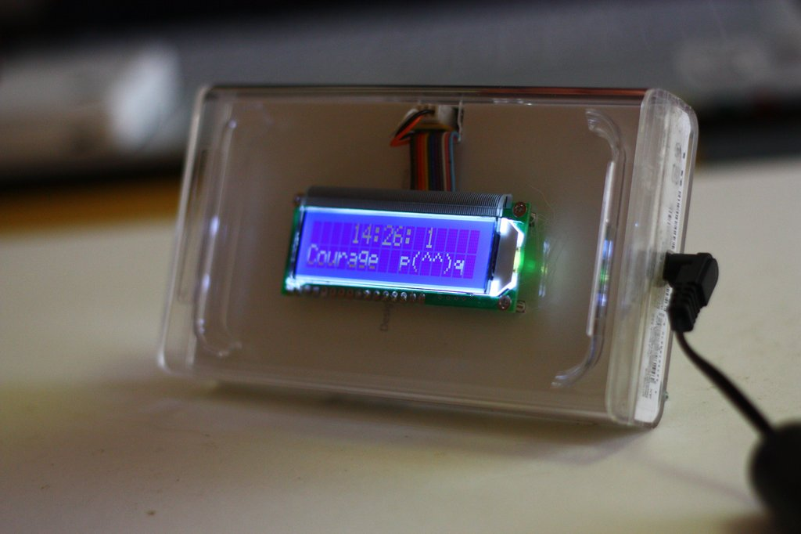
Still a clock, this time very simple, just shows time, nothing more. No alarm, no sound, no settings : just time. And no button at all, lighting is detecting by hovering the hand over the component : the IR reads the hand position and the closer you are the brighter it is. Final dot.
Still a new RTC (never used twice the same) I went for the fantastic
temperature compensated DS3232 of Maxim (thanks to them again for the 2 samples). 2 minutes change over a year : great toy.
Also, first use of the Sharp IR sensor, astonishingly simple and efficient. until 80 cm you have a nice, linear reading of the position. So cool.
To finish, there is
no arduino in that : I use my Pololu programmer to upload the code done into the Arduino IDE. Just compile, hear it fail that no Arduino Duemillanove is connected, and upload the code via the 6 pin connector on the card. Save space, money and keep my Arduino for what it's needed : prototyping or perpetual USB connection.
The whole toy is cased into a iPodTouch box (gave the iTouch, kept the box). Very happy with my casing, the nice internal paper cover hides nicely the electronic parts.
Schema, parts and code
Code
ARD_Reveil_v3.zip
No specific points of interrest. You might find useful the RTCDS3232.h that makes use of DS3232 easy in case, but there's no magic inside. If it can save you a few hours of job, feel free!
Uploading code
This might prove interresting : build your own 6 pins connector to upload the binary, have the Arduino IDE "upload" the code on a non connected COM port. It will successfully build the .hex file but fail to upload. So just pick the following command line that will upload that .hex file directly to the ATmega 328 (same as Arduino 2009). You save space (no bootloader) and money (way less expensive than embeding and Arduino 2009 inside this).
NB: my pololu is on COM1 and the path should be full path to make sure it works fine.
D:\arduino-0015\hardware/tools/avr/bin/avrdude -CD:\arduino-0015\hardware/tools/avr/etc/avrdude.conf
-v -pm328p -c avrispv2 -P\\.\COM1
"-Uflash:w:C:\Documents and Settings\Alan\My Documents\Arduino\ARD_Reveil_v3\applet\ARD_Reveil_v3.hex:i"
Parts
Except especially mentionned, I bought everything from my favorites : Akizukidenshi.com
- ATmega 328 : overkill but for 250 JPY why bother? And anyway I need analog input so ATtiny 2313 is out of competition so
- LCD : parallel interface, small characters, white on blue 800 JPY
- RTC : fantastic Maxim DS3232 temperature regulated clock, I love this thing. And thanks Maxim for sending me those 2 free samples, you got a new happy future customer. Just mind that it's small so you want a PCB that fits (Akizuki again).
- IR Sensor : Sharp GP2Y0A21 YK 400 JPY, precise up to 80 cm (great inexpensive component!)
- A few 10 uF and 0.1uF
- A few resistors : I2C pullups (10 kO), contrast of LCD (2 kO) and LCD backlight current limiter 100 ohm
- Coin battery %20 connector for the RTC
- Power : LM7805, 100 uF and 47 uF capacitors, 250 mA PTC (resetable fuse), 12v/0.7 A wallwart with connector (200 JPY !!)
Sum: 3000 JPY (or so), means 33 USD or 25 EUR. Fully assembled, programmed etc in 3 evenings (electronic part, not includes casing)
Schema
Not present on the schema :
- ATmega 328 Ground are plugged to ground, and VCCs and AVcc also.
- My realization has a 16MHz crystal and 2 22pF condesator, but I didn't set the fuse (except the prescaler) so it uses internal 8Mhz oscillator. More than sufficient for what it does.
- The power part is the usual LM7805 %20 2 condensators (before/after) %20 PTC. Note that I used cheap 7805 and that it produces non-neglectable amount of heat (or it is due to the 12v wallwart).
- SDA/SCL might be reversed, I'm too lazy to check the wires. Sorry. If it doesn't work in one way, it's the other one. Or RTFM. As you want.
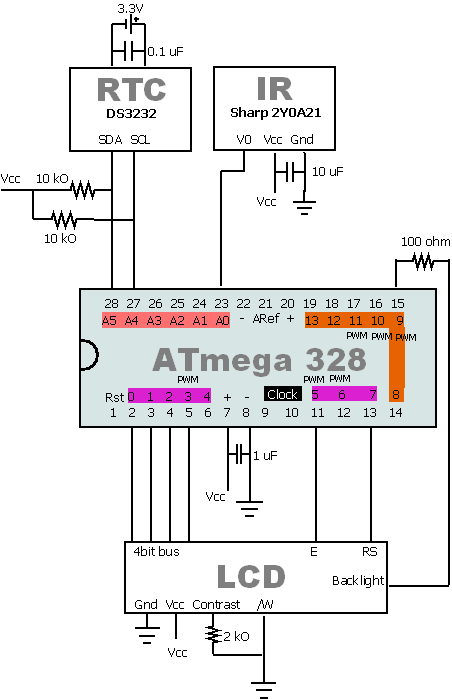
Pictures
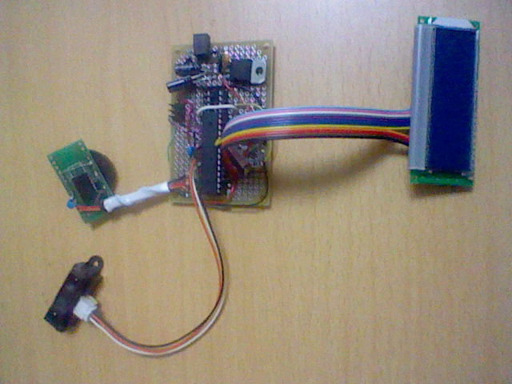
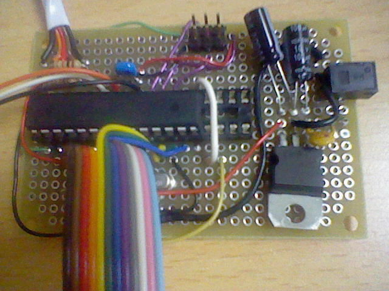
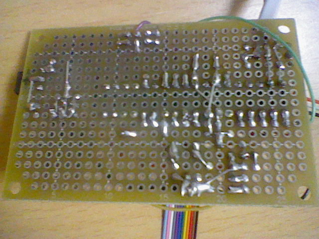
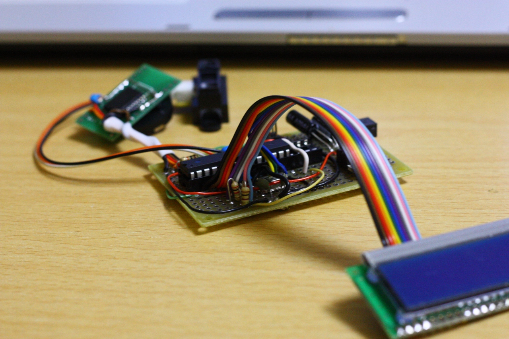
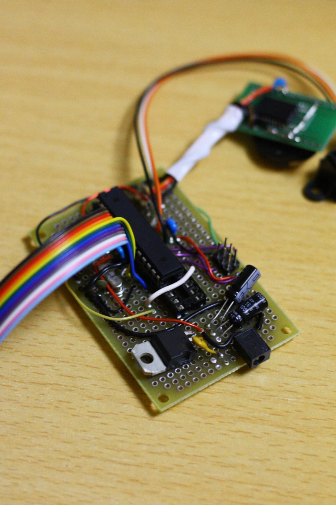
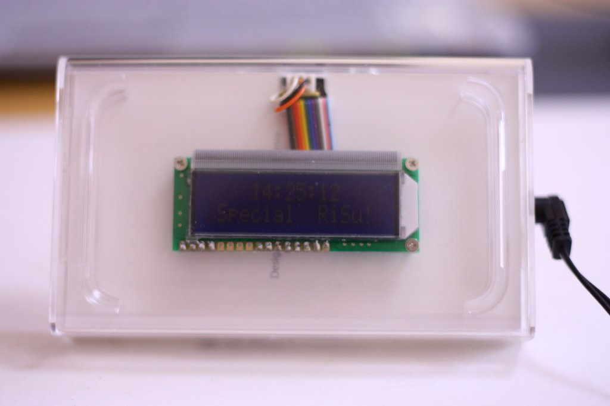
Usual display (hand not hovering), seems like off. But one with good eyes can see the time is still faintly visible.
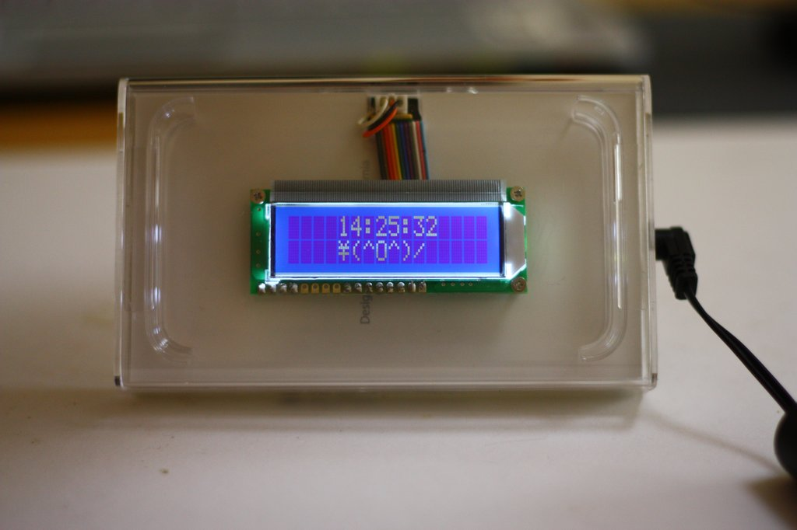
Hand hovering: display becomes readable (the closer you are, the brighter it is)
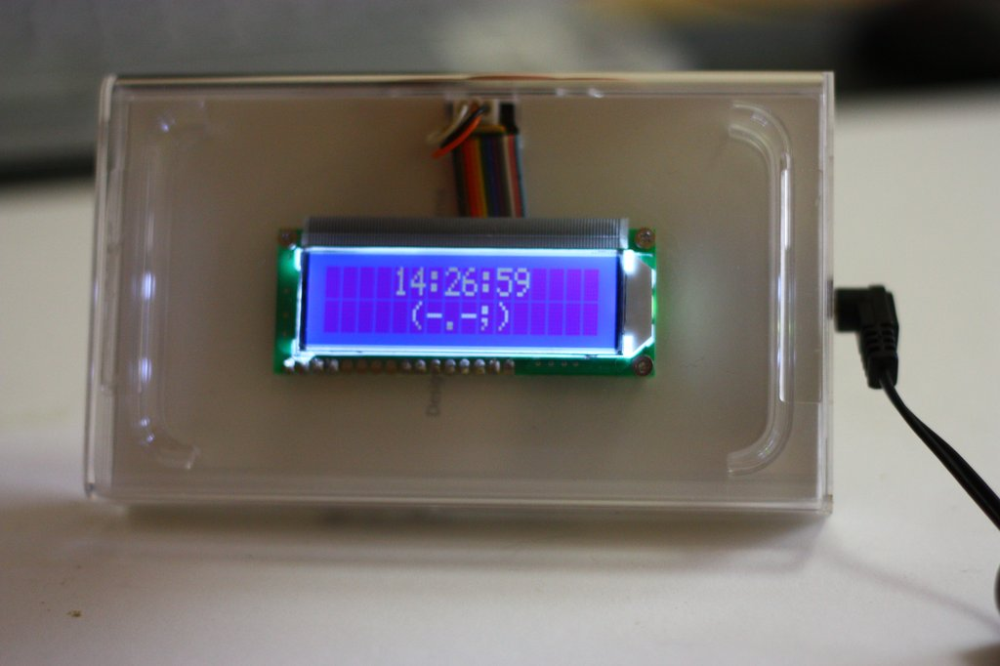
Hand hovering: display becomes readable (the closer you are, the brighter it is)
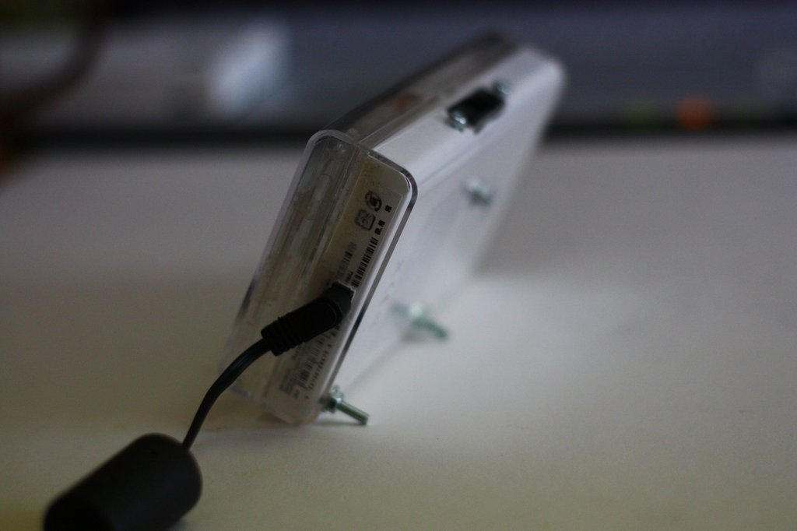
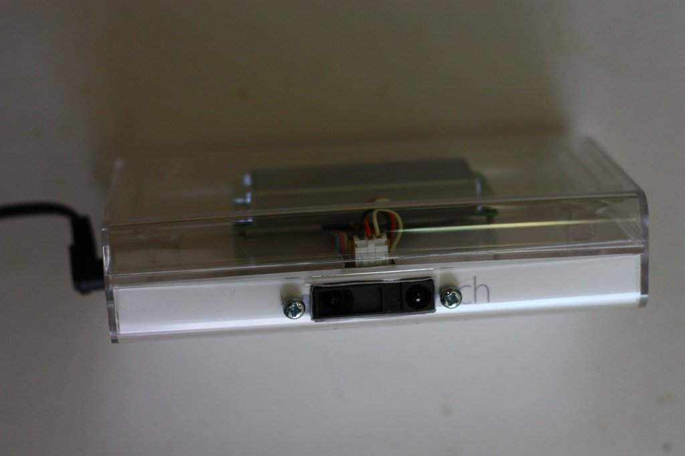